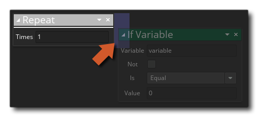

Beschreibung
Mit dieser Aktion werden alle Aktionen wiederholt, die der angegebenen Anzahl hinzugefügt wurden. Sie geben an, wie oft die Aktionen wiederholt werden sollen, und fügen dann die Aktion zur Wiederholungsschleife hinzu, ähnlich wie Sie eine Aktion zu einem "if" hinzufügen würden, dh sie auf die Seite der Aktion und nicht darunter ablegen: 
Alle der Seite hinzugefügten Aktionen werden in die Wiederholung einbezogen und vor dem Ereignis ausgeführt, oder das Skript wird mit den hinzugefügten Aktionen fortgesetzt (wie im folgenden Beispiel gezeigt). Beachten Sie, dass Sie eine Schleife vorzeitig beenden können, wenn Sie den Anruf Pause Aktion.
Aktionssyntax:

Argumente:
Streit Beschreibung Times Die Anzahl der Wiederholungen (ein ganzzahliger Wert)
Beispiel:

Der obige Aktionsblockcode ruft die Anzahl der Elemente in einer Liste ab und speichert den Wert in einer temporären lokalen Variablen. Diese Variable wird dann verwendet, um die Häufigkeit festzulegen, mit der eine Wiederholungsschleife ausgeführt wird, und in der Wiederholungsschleife werden die Einträge aus der Liste in eine andere temporäre Variable gelesen, die dann zum Zerstören der Instanzen verwendet wird, auf die sie verweisen. Nachdem die Schleife beendet ist, wird die Datenstruktur freigegeben.